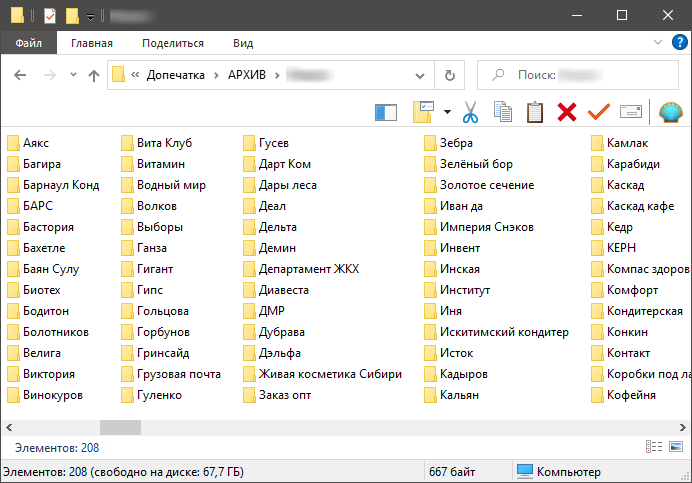
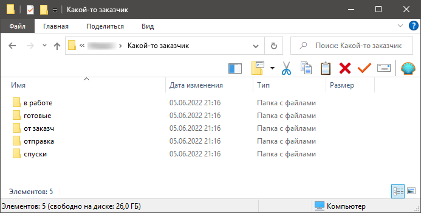
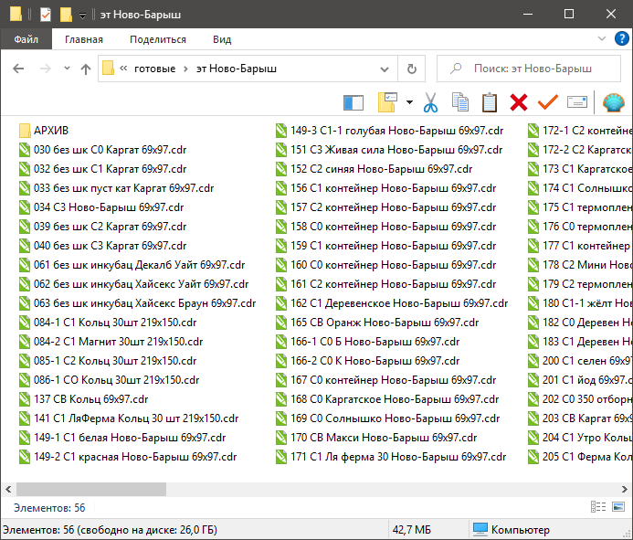
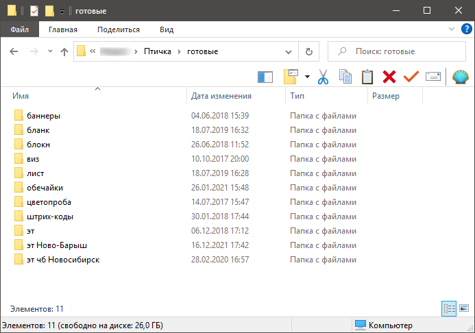
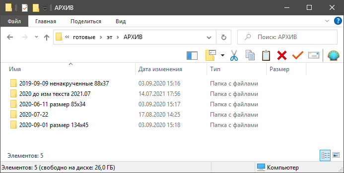
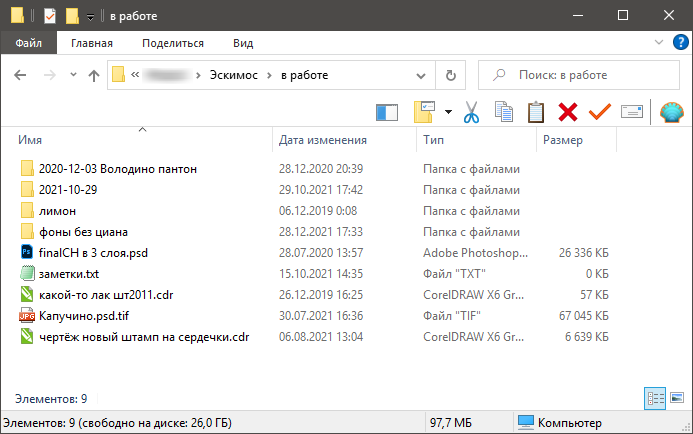
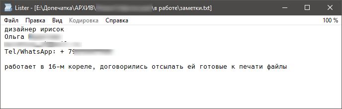
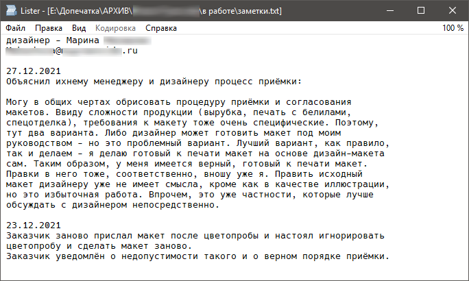
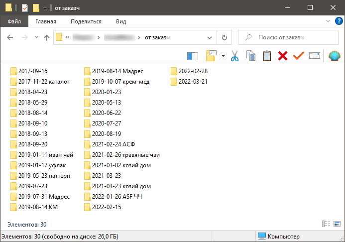
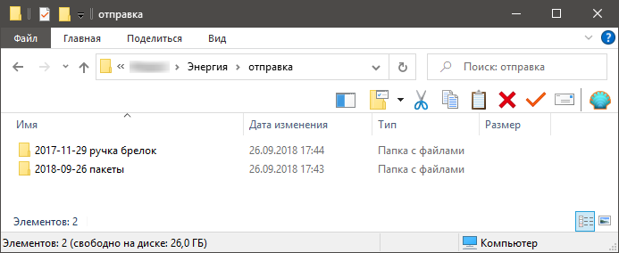

Каталогизация макетов
Как сортировать базу макетов, чтобы не заблудиться.
Содержание:
Общие соображения
Я допечатником работаю, поэтому немного своя специфика. Но в целом так.
На первом уровне папок - заказчики. Это почти везде так.

Внутри каждой папки с заказчиком - папки типа “входящее”, “рабочее”, “готовое” и “исходящее”:

Рассмотрим эти папки поподробнее.
Готовое
Основной смысл в том, что каждый макет должен иметь только одну версию - ту, которая представляет из себя готовый макет. Готовые макеты лежат в папке “готовое”. По какому принципу там внутри - опять же, можно по-разному. Упаковочное, что имеет штрих-код, удобно называть по последним четырём цифрам шк. Или по иному артикулу. Далее название продукта, возможно с типом в начале, и размер макета. Напр. 0169 торт Зимний вальс 239x112x80

Также можно разложить макеты, если их много, внутри папки “готовое” по подпапкам по какому-то обобщающему признаку. Например, “уп” (упаковка), “брош” (брошюры), “кал” (календари) :)

Старые версии макетов, которые когда-то были готовыми и актуальными, можно хранить в подпапке АРХИВ (внутри готовых/вид продукции). Удобно внутри создавать папки с датами. Даты лучше писать сначала год, потом месяц, потом день. Для того чтобы, при общей сортировки по имени, папки с датами сортировались по дате.

Если вы работаете в тотал коммандере, есть удобная утилитка, которую можно настроить на создание папки с текущей датой в текущей папке. Или можно батник какой-нибудь написать.
Рабочее
Всякие обмылки, недоделки, недомакеты, логотипы и запчасти к макетам, картинки, фотошопные коллажи и всякое такое кладём в подпапку “рабочее”. Там можно так же создавать подпапки с датой для вещей, имеющих временную привязку и просто папки, а что-то и в корень можно положить:

В том числе там можно создать текстовый файл типа “заметки”, куда складывать контакты заказчика, фиксировать договорённости, возможно вести историю каких-то ключевых моментов:


Входящее
Ну, тут просто - это материалы от заказчика “как есть”, пока вы не начали с ними работу. Если вы дизайнер, то, возможно хранение этого добра не очень актуально, а для допечатника важно хранение истории макетов в том виде, как они были присланы:

Исходящее
Если вы дизайнер, то тут могут быть макеты в том виде, в котором вы их шлёте заказчику/на печать. В кривых, с растрированием эффектов, с какими-то ситуационными доработками, которые произошли уже после того, как макет получил статус “готового”.
Я не настаиваю на том, что растрирование должно происходить уже после готовности - это для примера. Я, в скобках скажу, считаю, что лучше поместить схлопнутый вариант редко меняющегося, скажем, фона сразу в файл в “готовых”, а несхлопнутый вариант как раз оставить в “рабочем”. Но дело вкуса.
Для допечатника, основной продукт может быть в отдельной папке - “спуски”, либо спуски вовсе могут лежать прямо в корне, а в папке “спуски” будет архив прошлых лет. Но в папке типа “исходящее” могут храниться, например, макеты для печати на стороне, или шаблоны, которые вы отправляли дизайнеру заказчика.

Какие ещё могут быть папки?
У меня такие вещи, как pdf’ы на вывод, чертежи штампов и просмотровые джпеги/пдфы для согласования, хранятся отдельно от основного каталога. Но в принципе, можно хранить там же, в папке с заказчиком, добавив соответствующих подпапок.